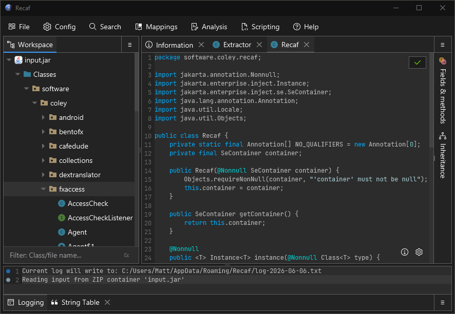

Recaf is an open-source Java bytecode editor that simplifies the process of editing compiled Java applications.
Recaf combines decompilation, bytecode editing, live patching, and much more into a single editor.
Click a feature card to read more.
Understand unfamiliar Java applications by browsing classes, decompiling methods, tracing references, and renaming symbols.
Safely inspect suspicious JARs, loaders, rats, and obfuscated bytecode with decompilers, bytecode views, search, and deobfuscation tools.
Patch application behavior, edit classes, replace resources, and export modified builds for clients, games, tools, or internal applications.
Attach to running JVM processes, redefine classes, test changes quickly, and shorten the edit-build-restart loop.
The user guide covers how to use Recaf from an end-user's perspective. This includes how to use its features, and any relevant topical knowledge that may be relevant.
The developer guide covers how Recaf operates and how to use its features, offering example code snippets for each feature. If you want to make a plugin/script you'll want to read this.
Curious how something works? You could open Recaf inside of Recaf, but its easier just to read the source on GitHub. Its also where you can report bugs or request new features.
The template plugin showcases how to set up a simple Java project that can be used to make Recaf plugins. It comes with a few gradle helper tasks to immediately build and launch Recaf with your plugin too.
Recaf has a tutorial built into the application. You should see it nagging you on the welcome panel if you haven't already completed it. You can access it any time you want from the menu bar via "Help > Tutorial".
While its not strictly neccessary, it does help to have a basic understanding of Java and the underlying class file format.